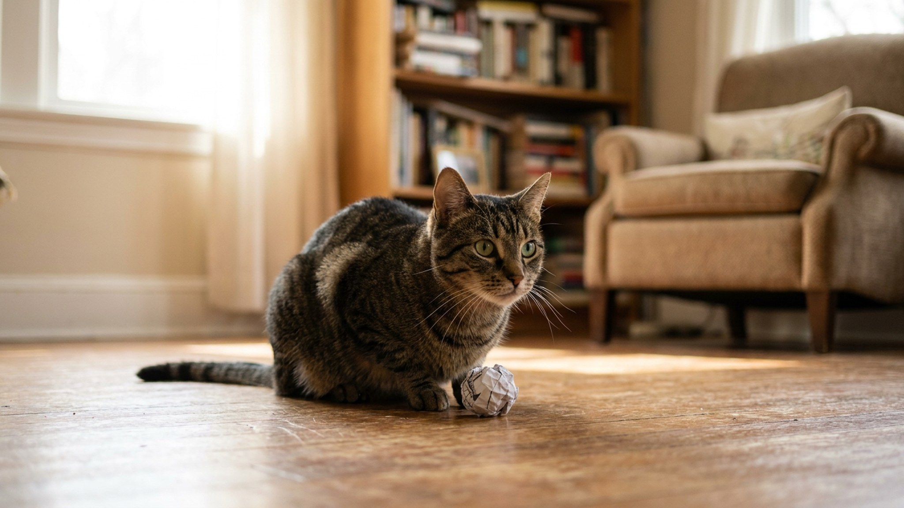

Хозяин бросил бумажный шарик — бенгальская кошка поймала, принесла обратно и сидит с ним в зубах, ждёт следующего броска. Многие уверены: апорт — это только про собак. На самом деле несколько пород кошек делают это спонтанно и с удовольствием — а любую кошку с достаточной мотивацией можно этому обучить.
🐾 Экономьте на лишних визитах к врачу
Сначала спросите AI-ветеринара в AnimaLife — часто этого достаточно, чтобы понять, нужен ли визит к врачу.
Апортировка у кошек — это расширение охотничьего паттерна «схватить + принести добычу». В природе кошки иногда приносят добычу в «базовое место» — нору или привычную точку отдыха. Домашние кошки переносят этот инстинкт на игрушки и бытовые предметы.
Дополнительный фактор: многие кошки, которые приносят вещи, хотят продолжения контакта с хозяином. Принести игрушку — это запрос «играй со мной ещё». Это говорит о высоком уровне социальной мотивации — черта, которая ярче выражена у отдельных пород.
1. Бенгальская кошка. Высокая активность, игровая мотивация и природная любовь к движению делают бенгалов самыми частыми «апортировщиками» среди кошек. Многие бенгалы начинают приносить предметы спонтанно, без обучения — особенно шуршащие объекты (фантики, шарики из фольги, крышки). Бенгалу нужна постоянная нагрузка: апорт решает проблему «куда деть энергию в квартире» частично.
2. Сиамская кошка. Сиамы — одни из самых социально ориентированных кошек. Они активно ищут взаимодействия с хозяином, и апортировка для них — способ инициировать и поддерживать контакт. Часто сиамы приносят не только игрушки, но и бытовые предметы: носки, ложки, колпачки от ручек.
3. Абиссинская кошка. Абиссины — кошки с очень высокой когнитивной активностью. Им быстро надоедают пассивные игрушки, они ищут интерактив. Апорт — один из немногих видов игры, который удовлетворяет их потребность в активном взаимодействии. Хорошо поддаётся обучению.
4. Мейн-кун. Несмотря на крупный размер, мейн-куны сохраняют «щенячий» характер до взрослого возраста. Многие из них охотно играют в апорт — особенно с мягкими игрушками небольшого размера, которые удобно нести в зубах.
Апорт встречается и у других пород — в меньшей степени, но регулярно: турецкий ван (известен любовью к воде и игре с предметами), бурманская кошка (высокая социальность), норвежская лесная. Также многие беспородные кошки с высокой игровой мотивацией делают это спонтанно.
Базовый принцип — положительное подкрепление. Заставить кошку принести предмет нельзя, но можно создать условия, в которых она сделает это сама — и закрепить это вознаграждением.
Апортировка — одна из немногих активностей, которая даёт кошке одновременно физическую и ментальную нагрузку при минимальном пространстве:
Для высокоэнергетических пород (бенгал, абиссин) 10–15 минут апорта в день существенно снижают деструктивное поведение вечером — когда кошка «не знает, куда деть себя».
Это самый распространённый случай. Несколько стратегий:
🐾 Всё о вашем питомце — в одном приложении
AI-ветеринар, дневник, напоминания о прививках и уходе. Установите AnimaLife — это бесплатно, в Telegram и MAX.
🐾 Понравился разбор?
Подпишитесь на канал — каждый день разбираем по одному тревожному симптому у кошек и собак: что в пределах нормы, а когда пора к врачу. Подпишитесь, чтобы не пропустить разбор, который может спасти здоровье вашего питомца.